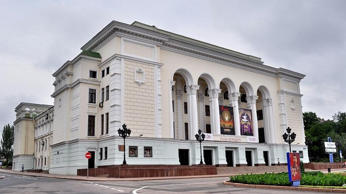
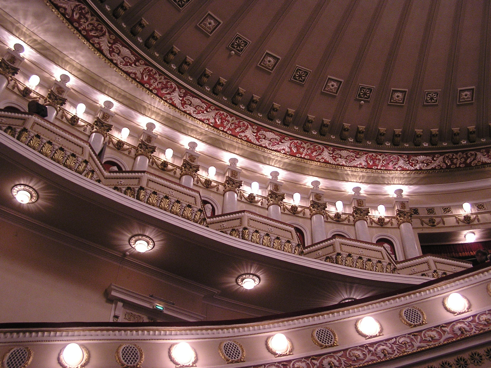
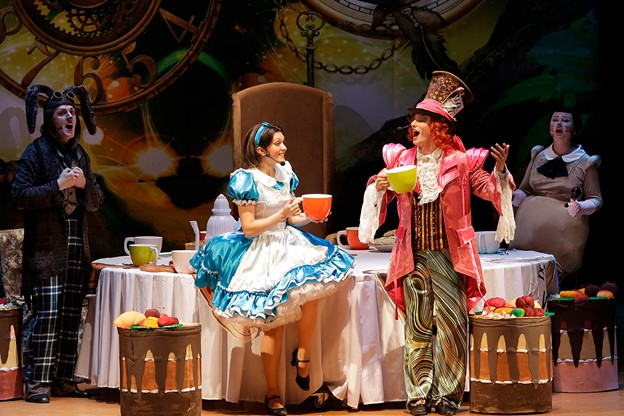

Донецкий государственный академический театр оперы и балета имени А. Б. Соловьяненко
Донецкий театр оперы и балета был создан в 1932 году в Луганске на базе Луганского театра оперы и балета и Передвижной оперы Правобережной Украины в Виннице. Первый сезон открылся 1 сентября 1932 года оперой А. П. Бородина «Князь Игорь». В 1936 году, в связи с генеральной реконструкцией, в городе Сталино (ныне — Донецк) было начато строительство нового театра по оригинальному проекту архитектора Л. И. Котовского. С ноября 1940 года Донецкий русский музыкальный театр (так первоначально назывался коллектив) начал свою деятельность. 12 апреля 1941 года, премьерой оперы Михаила Глинки «Иван Сусанин», театр открыл свой сезон в новом театральном здании. 7 августа того же года на сцене Донецкого театра состоялась премьера первого балетного спектакля «Лауренсия» Александра Крейна.
Во время Великой Отечественной войны часть труппы, те которым успели сообщить, были эвакуированы в село Сазановка в Киргизской ССР. Позднее, в июне 1942 года, коллектив театра переехал в город Пржевальск. Там Донецкий театр проводил концертную деятельность в госпиталях, военных частях, перед тружениками тыла, а также работал над созданием новых спектаклей. В конце января 1944 года театр был реэвакуирован в Сталино и уже в сентябре, в честь первой годовщины освобождения Донбасса от немецких войск, в театре состоялась премьера оперы А. П. Бородина «Князь Игорь». В те же годы в театре был поставлен балет «Лилея» на музыку Константина Данькевича по поэме Т. Шевченко. В сентябре 1947 года Донецкий русский музыкальный театр был переименован в Сталинский государственный русский театр оперы и балета. В 1957 году труппа Донецкого театра впервые интерпретировала произведение композитора В. Гомоляки балет «Чёрное золото». 2 октября 1977 года за большие заслуги в развитии советского искусства театру было присвоено звание «академический». В 1992 году при театре была создана Школа хореографического мастерства под руководством Народного артиста Украины Вадима Писарева. С 1994 года на базе театра проводится Международный фестиваль «Звёзды мирового балета», основателем и художественным руководителем которого также является Вадим Писарев.
В 1999 году Постановлением Кабинета министров Украины от 9 декабря 1999 года театру было присвоено имя советского украинского оперного певца А. Б. Соловьяненко. В репертуар Донецкого государственного академического театра оперы и балета входит более 50 наименований — произведения украинской, российской и западноевропейской классики: оперы, балеты, оперетты, музыкальные сказки для детей. В Донецком театре оперы и балета были популярны представления балета «Война и мир», оперы «Мадам Баттерфляй», а также балета «Собор Парижской Богоматери». Донецкий театр оперы и балета впервые показал в Москве балет «Война и мир». В спектакле были задействованы около 300 человек, а оформление для постановки создавали всем миром.